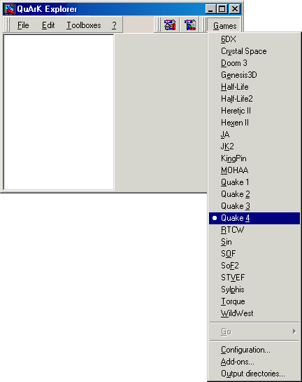
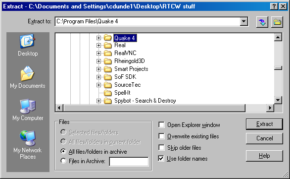
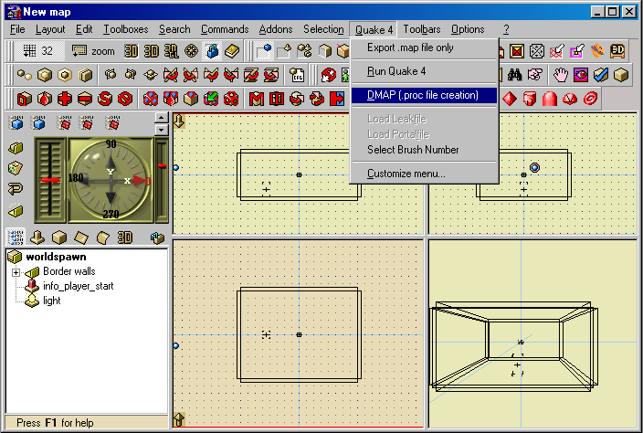

|
In this short tutorial I will be showing you how to quickly setup Quark to compile and
run maps for the Quake 4 game engine. This is one of the easiest games to configure in QuArK.
Primarily because, unlike most other games, there are no build tools that you need to download
or setup to build a map with. These are already built right into the Quake 4 game engine itself.
In addition, just about every setting you need is already pre-set for you. So let's get to it!
|
Part 1 – Setting up QuArK to work with Quake 4
In this section we will quickly go over how to setup Quark to work with Quake 4.
To start with load up Quark, you should be greeted with the 'Quark Explorer' panel.
The Quark Explorer allows you to define which game environment you wish to work in,
as well as doing many other things.
First we need to select the game we want to map for. We do this by simply going
to the 'Games' button located on the top right of the Explorer panel, once pressed it
will present you with a drop list of all the currently available games, select
Quake 4 as shown in the screen shot to the right.
Next we need to setup Quark to work with the Quake 4 game engine, to do so go back to the
'Games' button and press the 'Configuration' button at the bottom of the list.
Once selected a new window will be opened called 'Configuration', making sure you have
Quake 4 selected on the left navigation panel, (under the Games Tab) as we now need
to fill out some of the necessary game settings on the right of the Configuration panel which
is shown in the next image just below.
|

|
|
Part 2 – QuArK game and .md3 model packs
These are the QuArK Quake 4 game support packages. Download both .zip files and extract them, using the
folders path option, to the game folder location where you have Quake 4 installed on your computer.
All the paths to the "q4base" sub-folder have already been set in these zip files.
You need to download the base
QuArK_Quake4.zip
game support package from the Official QuArK site to display all textures and updated shader files.
The zip file is about 12.6 MB and will take around 30 seconds with cable or DSL.
The second QuArK_Quake4md3.zip
file is optional, but required if you wish to actually see the models for placement in the QuArK editor 3D views.
It was done this way because it is a much larger file, about 365 MB and will take around 15 minutes with cable or DSL.
These packages have been created to work with QuArK 6.5.0 Beta 1 or later and will give the most complete
support available.
Every effort has been made working through the Quake 4 game files and other sources to allow the viewing
of all available textures in QuArK's Texture Browser,
all game models viewable in the 3D editor Texture views and detail entity settings with the use of
pre-defined dropdown list, model selection and variations list, file selection capabilities for models
and sounds, as well as 'color pickers' for all lighting functions. Even a few 'script\shader' corrections.
|

|
|
Part 3 – QuArK Quake 4 Configuration settings
As you can see in the image below, most of the settings have already been set with a default
entry. While others have been pre-coded in
QuArK's Defaults.qrk file that you can not see. This will prove to make life a lot easyer
when you go to build and run your maps in Quake 4.
Quake 4 command-line : Even though this is pre-set for you, I wanted to explain
exactly what the added items are that follow the quake4.exe entry.
The "+seta com_allowconsole 1" lets you bring down the Game Console by pressing the ~ Tilde
key, instead of Ctrl+Alt+~ keys as you would normally have to do.
The "+dmap %filename%" is the command that is fed into the Quake 4 Game Console automatically to
build your map, %filename% is a variable that fills in the current map name you are editing.
And even though you can not see it, because it has been pre-coded in QuArK's Defaults.qrk
file, there is another command line entry of "+devmap (the map name)" that loads the compiled
map in to the Quake 4 engine and runs it.
Directory of Quake 4 : This is the ONLY item that you really need to set.
If this does not match your location, use the ... button to select your Quake 4 folder.
After you have finished setting Quark to work with the Quake 4 engine, simply hit the 'Apply'
button, and then press the 'OK' button to close the Configuration panel. This will put you
back in the Quark Explorer. Now is also a good time to close QuArK completely, this will
save your settings in the Setup.qrk file. You're done!
|
Part 2 – Compiling
When you are ready to compile your map, simply select the "DMAP [.proc file creation]"
main menu item. This will cause QuArK to export the map file to your Quake 4\q4base\maps
folder. If the maps folder does not exist then QuArK will create it. Once that is done,
QuArK will then start Quake 4 up to complete the process of compiling the map file and
running it in Quake 4. All the compiled files will also be created in the maps folder.
It can't get much simpler then that!
|

|
Because you have already completed the configuration steps above you will be able to see your map in QuArK's Textured 3D view.
Even that part is automatically done for you. Just place your mouse cursor over that view, click your RMB and select "Textured" from the pop-up menu.
The only other thing QuArK could do to make it easer, would be to make the map for you.
Just a few more minor but important pointers in the Misc. Info.
section below and you're good to go.
|
|
|
Misc. Info.
|
cdunde - 25 Jul 2009
|
[ Top ]
|
|
Changing and re-running a map
Normally, I run Quake 4 in a separate window, instead of its "Full Screen" mode when working on
a map, for a couple of reasons. First it's a lot easer to see around to view something in the
editor that you might be concentrating on with your work. The other is being able to jump back
and forth between the editor and the game running by simply holding down the Alt key and
pressing the Tab key to switch. It seems less confusing that way.
Another nice feature is the ability to make changes in your map while the game is still running
and then simply rebuild and reload the map. This is done by clicking the same menu item in QuArK
to export the map, then click on the game, press the Tilde ~ key and enter the two commands to
build and run it again. If you stayed with the default name they would look like this:
dmap newmap
devmap newmap
And Walla, your changes appear in the game! This method saves a lot of time of constantly having
to restart the game and wait for it to build and load the map again. But you can also do it that
way as well if you like. Just click the QuArK menu item and off you go. To close the game,
press the Esc key and select "Exit" from its menu.
If, for some reason, the map does not build and run automatically, then you will need to bring down
the game console twice and enter the above commands by hand.
|
|
|